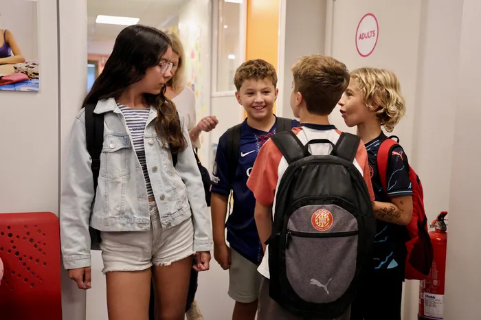
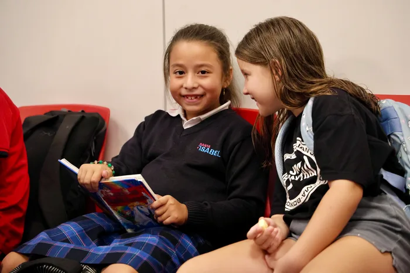
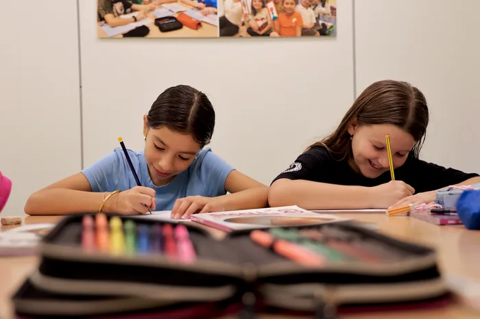
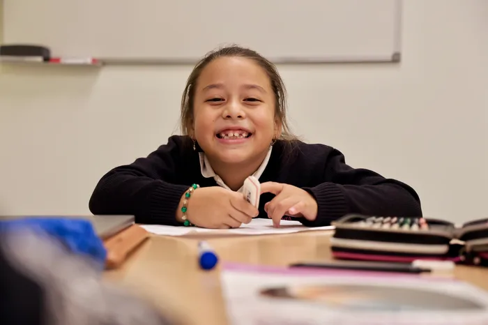
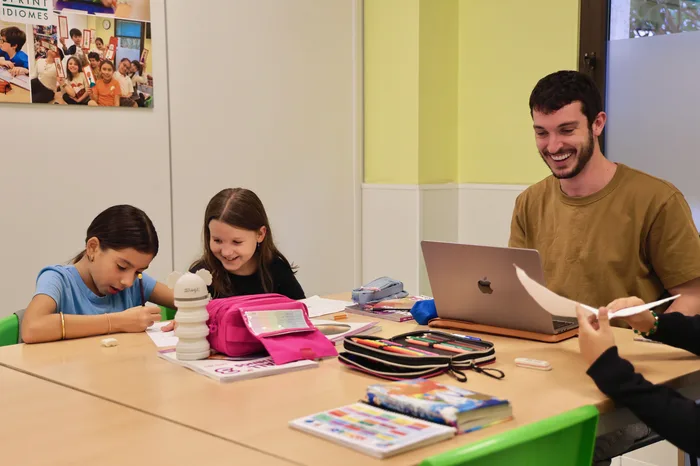

Construim les bases d'un bon anglès
Al departament de Kids, els alumnes de 2n a 6è de Primària desenvolupen les seves habilitats en anglès a través de classes dinàmiques, participatives i adaptades a la seva edat.
Com ho fem perquè funcioni?
A Kids, combinem activitats dinàmiques amb el desenvolupament progressiu de les habilitats lingüístiques, adaptant l'aprenentatge a cada edat i nivell.
La primera classe és gratuïtaComunicació en anglès
Fomentem la interacció oral perquè els alumnes guanyin confiança i aprenguin a comunicar-se en anglès.
Aprenentatge dinàmic
Combinem jocs, activitats participatives i projectes de classe relacionats amb la cultura anglosaxona.
Grups reduïts
Màxim 12 alumnes. Cada estudiant té temps de parlar i participar.
Aprenentatge estructurat
Treballem amb llibres de text adaptats a cada nivell, que complementem amb activitats audiovisuals i dinàmiques.
Classes on aprendre és divertit
Classes dinàmiques i participatives, en grups de màxim 12 alumnes.





Cada pas compta
Cinc nivells per avançar en l'aprenentatge de l'anglès, respectant el punt de partida de cada alumne.
Trobeu l'horari que us encaixi millor
De dilluns a divendres, a la tarda. Dues hores de classe a la setmana.
| Nivell | Dies | Hora |
|---|---|---|
| K2 | Dilluns i dimecres | 17:30–18:30 |
| K2 | Dimarts i dijous | 17:15–18:15 |
| K3 | Dilluns i dimecres | 17:30–18:30 |
| K3 | Dimarts i dijous | 17:15–18:15 |
| K4 | Dilluns i dimecres | 17:30–18:30 |
| K4 | Dimarts i dijous | 17:15–18:15 |
| K5 | Dilluns i dimecres | 17:30–18:30 |
| K5 | Dimarts i dijous | 17:15–18:15 |
| K6 | Dilluns i dimecres | 17:30–18:30 |
| K6 | Dimarts i dijous | 18:15–19:15 |
| K2 | Divendres | 17:30–19:30 |
| K3 | Divendres | 17:30–19:30 |
| K4 | Divendres | 17:30–19:30 |
| K5 | Divendres | 17:30–19:30 |
| K6 | Divendres | 17:30–19:30 |

Primera classe gratuïta, sense compromís
Voleu saber més sobre Kids? Contacteu amb nosaltres i us informarem.